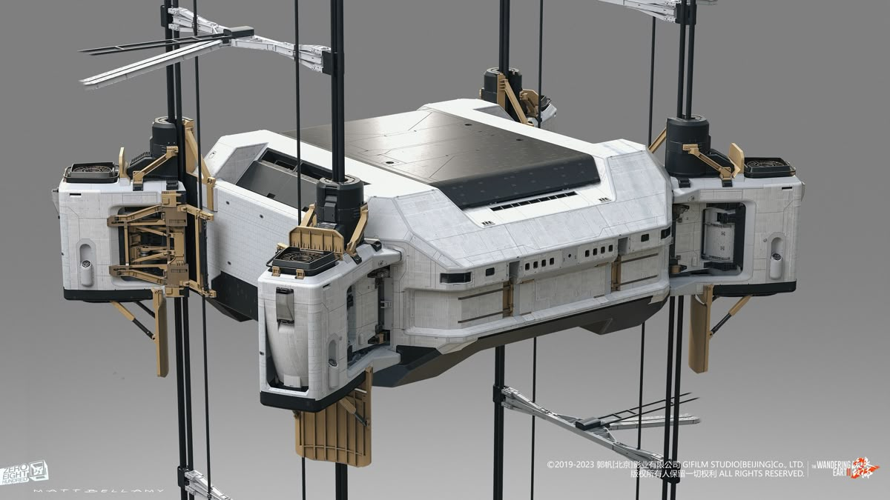

2012年2月，日本建筑巨头大林组（Obayashi Corporation）正式对外宣布了一个震惊世界的计划：在2050年建成世界上第一座太空电梯。这是目前全球最具体、最系统的太空电梯建设蓝图。
日本 - 最雄心勃勃的计划

载客与货运：爬升舱/太空舱概念设计图
技术规格
总高度
96,000 公里
（地球直径的7.5倍）
爬升速度
200 km/h
（新干线速度）
单程时间
7.5 天
（到达地球同步轨道）
载客量
30 人/舱
（豪华太空邮轮设计）
预算
100 亿美元
（约1万亿日元）
票价预估
20万美元
（远低于火箭）
大林组计划时间表
2012-2020
基础研究阶段
碳纳米管材料研发、理论验证
2020-2030
技术验证阶段
小规模原型测试、国际空间站实验
2030-2040
工程设计阶段
详细工程设计、材料量产技术突破
2040-2050
建设施工阶段
地面基站建设、空间站部署、缆绳铺设
2050
正式运营
世界首座太空电梯开始商业运营！
当前进展（2025年）
[✓]
2018年国际空间站实验
成功测试微型爬升器，验证了电磁驱动机制在太空环境中的可行性
[✓]
与东丽公司合作
开发高强度碳纳米管纤维，目前强度已达理论值的50%
🔄
爬升器原型研发
正在测试不同的驱动方式：电磁、机械滚轮、激光动力
⏳
国际合作谈判
正在与美国NASA、欧洲ESA洽谈技术合作和投资
美国 - 科研与竞赛推动
NASA太空电梯研究
研究项目美国宇航局（NASA）从2000年代初就开始资助太空电梯相关研究，主要由马歇尔太空飞行中心（Marshall Space Flight Center）负责。

示意：同步轨道空间站/配重系统是研究重点之一
主要成果：
- 2000年：发布《太空电梯可行性研究报告》，确认技术可行性
- 2003年：提出"太空电梯设计参考任务"（DRM）
- 持续资助碳纳米管材料研究
- 开发太空电梯系统仿真软件
太空电梯竞赛（Space Elevator Games）
年度竞赛2005-2009年，NASA资助的竞赛，奖金总额高达400万美元，旨在激励技术创新。
缆绳强度挑战
目标：50 MPa·m³/kg，奖金$200万
爬升器竞赛
目标：1km垂直爬升，速度>5m/s，奖金$200万
竞赛成果：
- 2009年：LaserMotive团队的爬升器达到900米高度，速度3.95 m/s，赢得90万美元奖金
- 刺激了激光能量传输技术的发展
- 培养了一批太空电梯工程师和创业公司
私营企业参与
商业化- LiftPort Group - 曾计划2031年建成月球太空电梯，进行了多次众筹
- SpaceX - 马斯克表示对太空电梯持开放态度，但目前专注于火箭
- Tethers Unlimited - 研发太空缆索系统，技术可用于太空电梯
中国 - 材料科学突破
碳纳米管超长制备技术
重大突破清华大学魏飞教授团队在碳纳米管制备技术上取得世界领先成果：

材料突破：碳纳米管纤维/束的显微图像（示意）
- 2013年：制备出55厘米长的单根碳纳米管，创造世界纪录
- 2018年：实现连续化、规模化生产，产能达公斤级
- 2023年：碳纳米管纤维强度达80 GPa，接近理论要求
意义：中国在太空电梯最关键的材料技术上占据领先地位，为未来建设奠定基础。
中国航天科技集团研究
长期研究中国航天科技集团将太空电梯列入远期研究计划：
- 开展太空电梯系统总体设计研究
- 研究适合中国国情的建设方案（可能选址海南或南海）
- 与清华大学、中科院等机构合作进行材料研发
月球太空电梯方案
提案阶段部分中国科学家提出："先月后地"战略——
- 在2040年代建设月球太空电梯作为技术验证
- 利用嫦娥工程的月球基地作为锚定点
- 为地球太空电梯积累经验
欧洲 - 理论与仿真
欧洲航天局（ESA）研究
基础研究ESA主要进行理论研究和概念验证：
- 建立太空电梯动力学仿真模型
- 研究空间环境对缆绳的影响
- 评估在不同星球建造太空电梯的可行性
- 参与国际合作，提供欧洲视角
德国、瑞士大学研究
学术研究多所欧洲大学开展太空电梯相关研究：
- 慕尼黑工业大学：结构力学分析
- 苏黎世联邦理工学院：材料科学研究
- 剑桥大学：风险评估和经济分析
其他国家与组织
RU
俄罗斯
作为概念发源地，俄罗斯继续进行理论研究，但资金限制较大。
KR
韩国
韩国航空航天研究院（KARI）开展小规模研究，关注爬升器技术。
IN
印度
印度空间研究组织（ISRO）进行可行性分析，考虑赤道选址优势。
INTL
国际空间电梯联盟
ISEC（International Space Elevator Consortium）协调全球研究，每年举办会议。
国际合作的必要性
太空电梯是人类历史上最宏伟的工程之一，没有任何一个国家能够独自完成。国际合作不仅可以分担巨额成本，还能汇集全球最顶尖的科学家和工程师。
可能的合作模式
技术分工
- 日本：总体设计与建设
- 中国：碳纳米管材料供应
- 美国：爬升器与控制系统
- 欧洲：空间站与安全系统
资金来源
- 各国政府投资（占40%）
- 国际组织资助（占20%）
- 私营企业投资（占30%）
- 预售运营权（占10%）
成果共享
- 所有参与国享有使用权
- 技术专利共同所有
- 收益按投资比例分配
- 优先保障科研使用
合作面临的挑战
需要建立类似"国际空间站"（ISS）或"国际热核聚变实验堆"（ITER）的国际合作框架。